Don’t worry. This is New York. No one will help her.
Don’t worry. This is New York. No one will help her.

That’s gonna leave a mark.
Fast Food, NYC, 1970s

Train yard, 1970s.
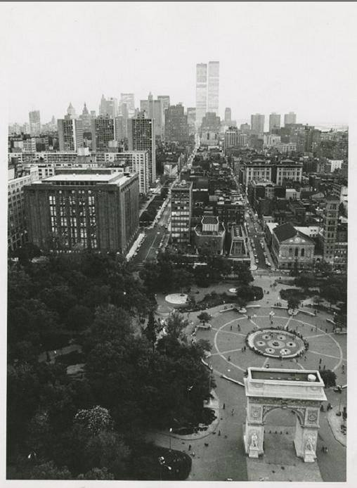
Washington Square Park, looking south to the World Trade Center. 1970s.
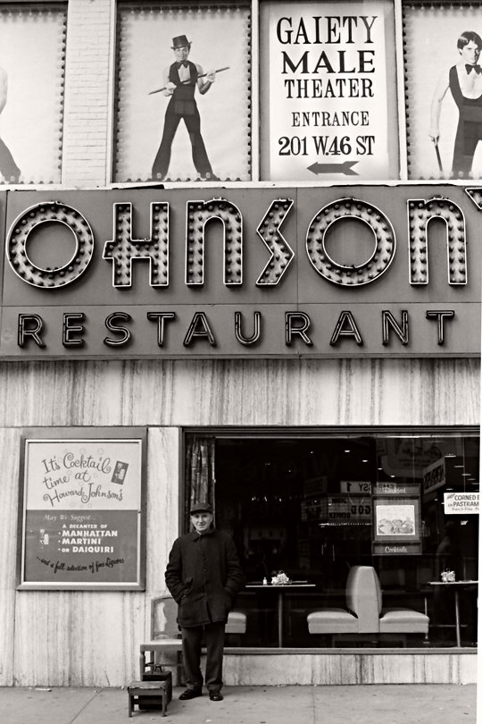
Love under the Astor Place cube. 1970. Nice boots, dude!

West 31st Street in the 70s. This is the Manhattan I remember!
New York City street scene, 1960s.
Trash:1985 by aquaman6 on Flickr.
St. Marks
St. Marks always crazy.

Don’t walk; sing.
Broadway and 99th Street, 1970s.
New York City ca. 1970
Chillin’ at DeVincenzi & Co, 1970s.
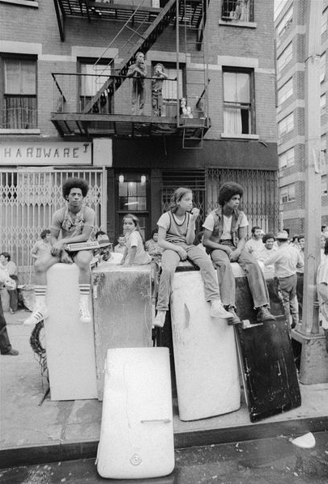
Kids sitting on discarded refrigerators in the Lower East Side, 1970s
The Magic of New York

Bored 1970s cop on Central Park South.

Park Avenue South at 29th Street, 1970. Looking north at the Pan Am Building.
The garment district, NYC, 1970s, Anthony Burgess


She wants nothing to do with the Hare Krishnas, or the blind guy.

The weirdest things happen on NYC rooftops…
Biking down Riverside Drive, 1896.
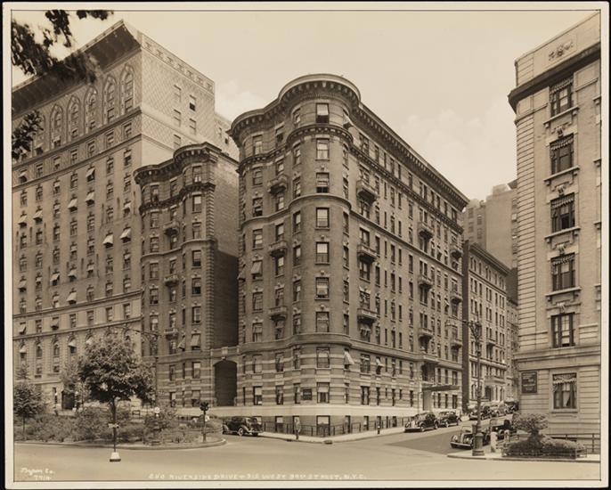
Riverside Drive and 97th Street, 1939.
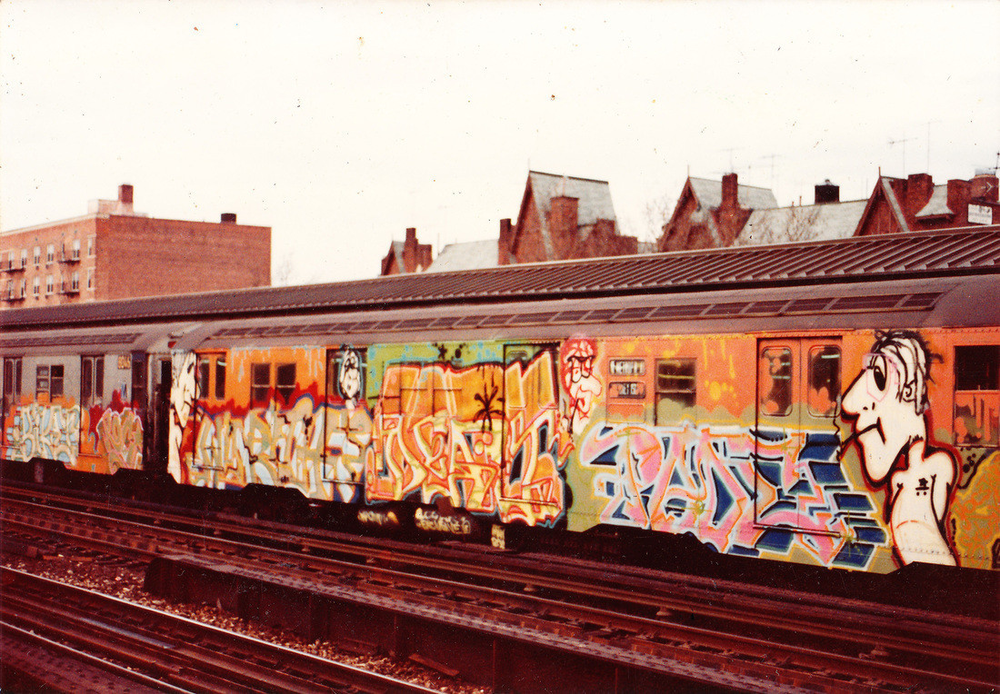
Who thinks clean trains are better than this?
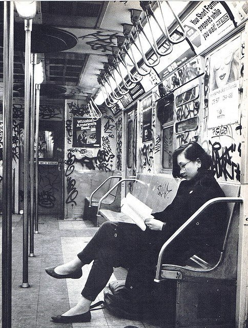
She looks all innocent, but I bet she wrote half those tags.

Fulton Street market, 1941.
1 train, heavily bombed.

R Train, circa 1980. Times were tough, and they couldn’t afford real signs.

Gansevoort Street, 1936. NYC meatpacking district.
The newly constructed towers of the World Trade Center seen from the south side on West Street 05/1973. See more old pictures of World Trade Center in 1973 here.
I’ve got nothing right now, but I’ll keep my eyes open…

Manhattan Bridge under construction, 1909.

Pearl Street, 1942
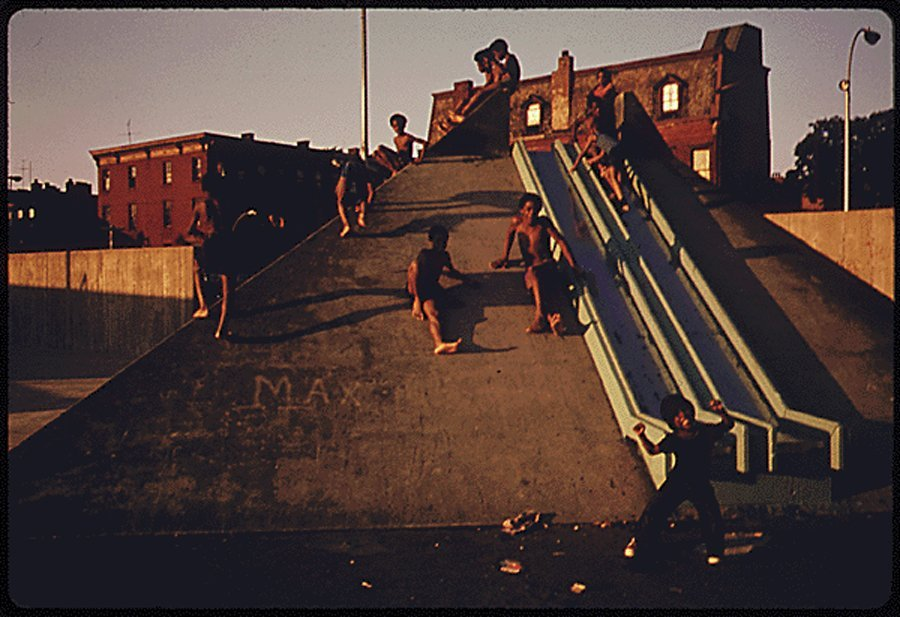
Bed-Stuy Brooklyn, 1974

Times Square, 1965

Photo by Mitch O’Connell

Room for one more…
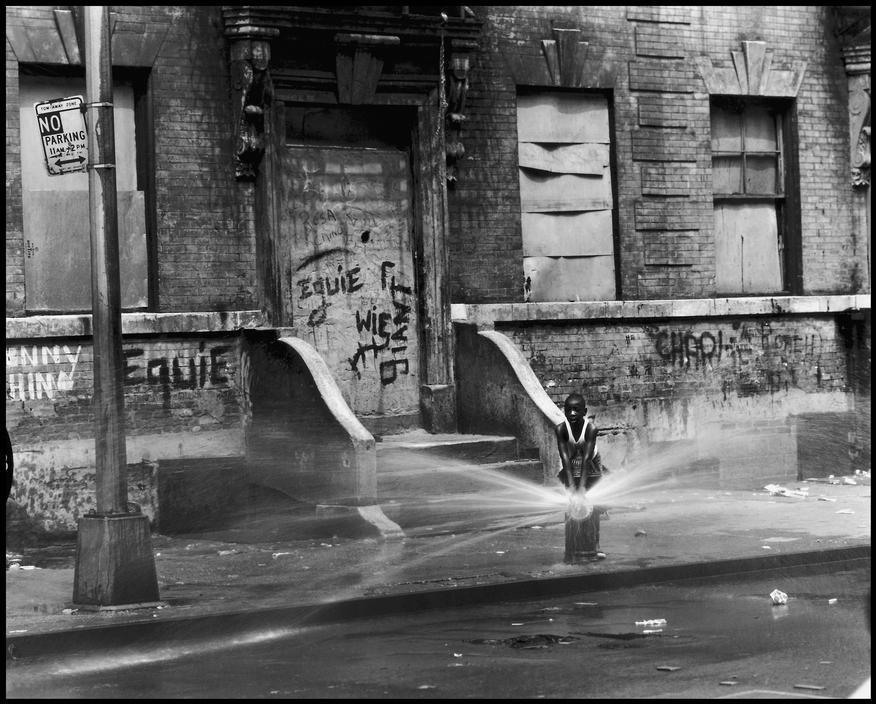
Fun on 100th Street, 1966.

Checker cab on 42nd Street, 1988.

Subway Kiss, 1987 by Richard Sandler
The Bronx in the 70s.

New York. Third Avenue elevated railway at 18th Street. 1942.

NY City Street Cleaner, early 1900’s
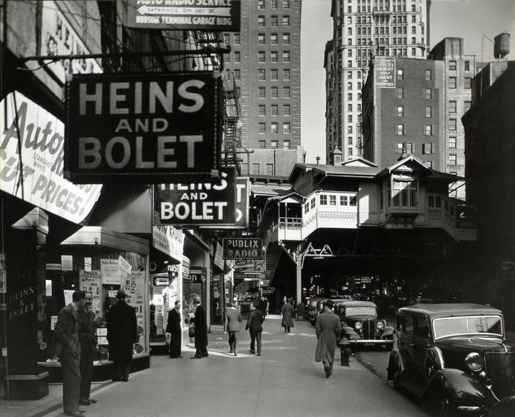
Radio Row, 1936. (Cortland Street.) This was one of the blocks that was demolished to make way for the World Trade Center.

A view from Brooklyn of the WTC construction, 1971.
The South Bronx in the 70s. It was scary enough there without this sort of horror.
A couple sharing a cigarette in Central Park, 1957 © Phil Greitzer

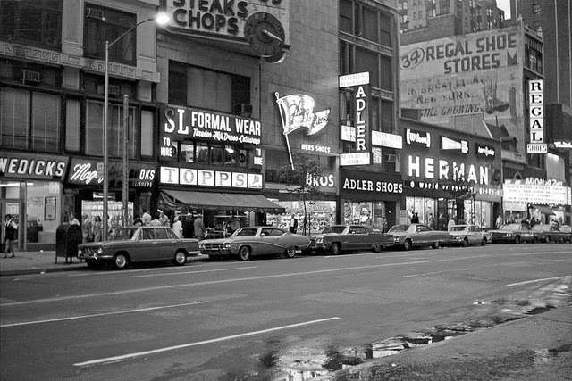
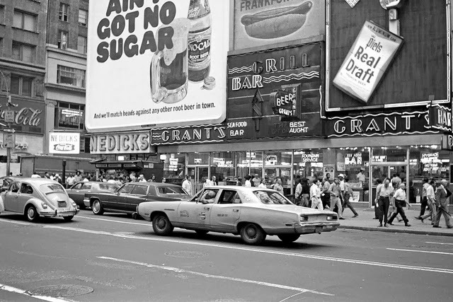
NYC in 1971.
http://www.vintag.es/2013/10/black-whhite-photos-of-new-york-city-in.html

Cope 2

George Washington Bridge in the 70s.
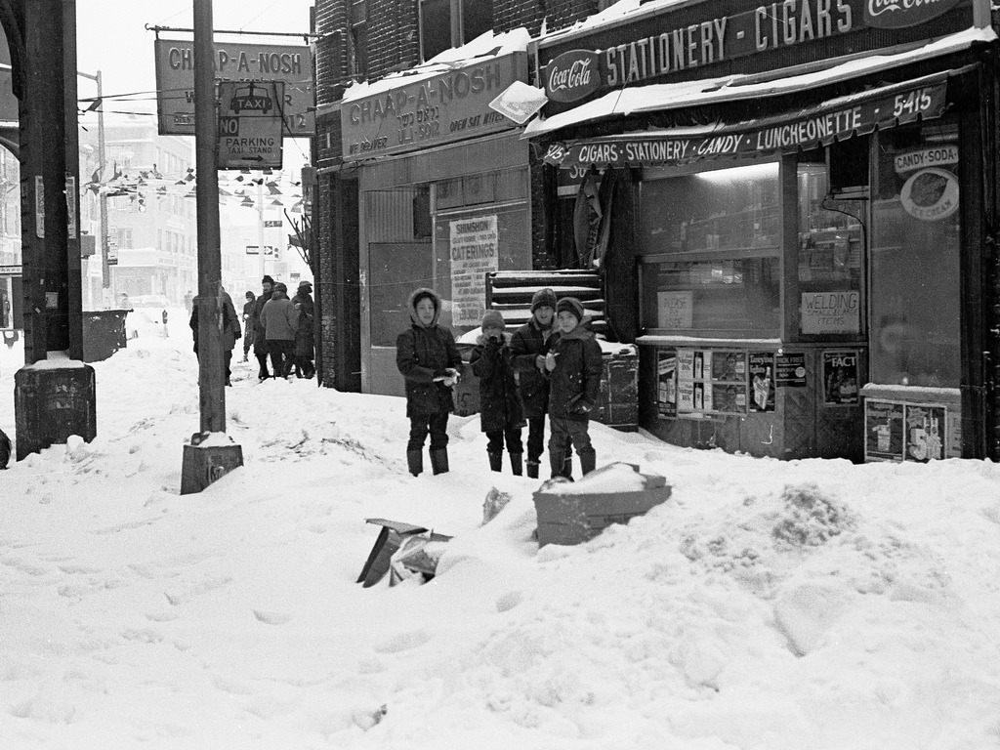
Brooklyn, during the blizzard of 78.
{kind=link}
{kind=link}